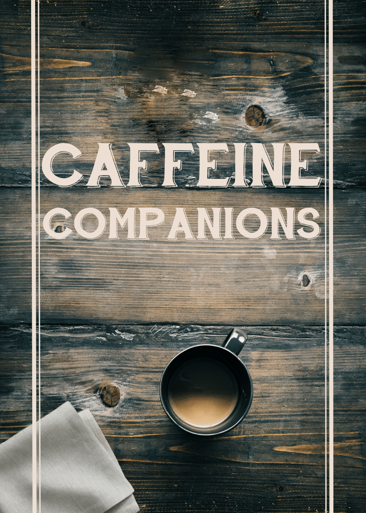
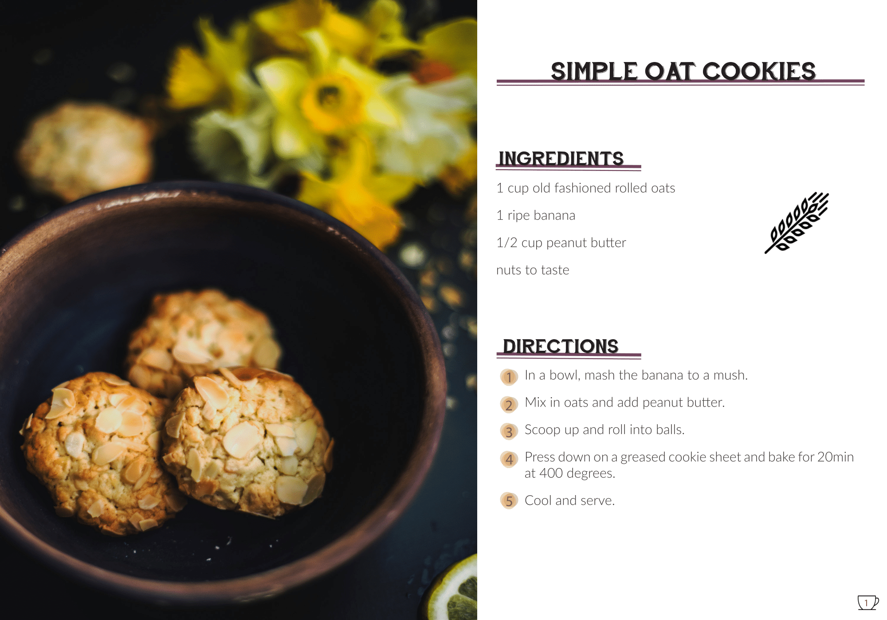
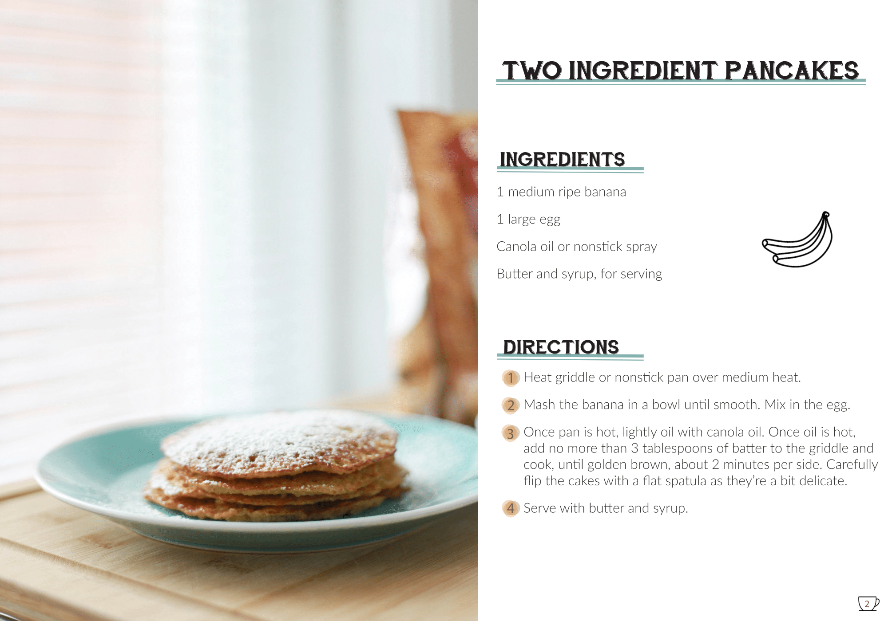
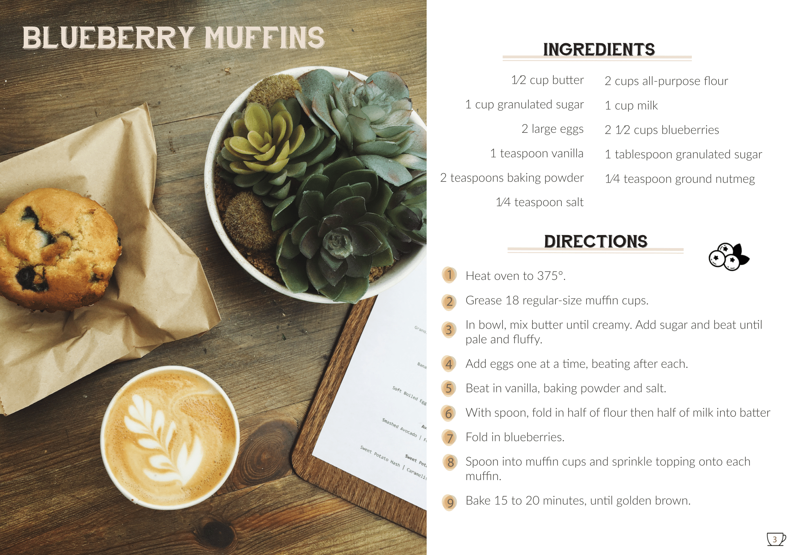

Caffeine Companions is the beginning of a cookbook centered around coffee and tea–paired recipes. Created in Adobe InDesign in the Spring semester of 2017 for New Media Digital Survey II, this project combines editorial design with food photography and clear typographic hierarchy.
Designed the full cookbook layout from cover to interior spreads: established a cohesive visual system (colors, typography, spacing), styled recipe pages for scannability, and integrated imagery with descriptive captions. The design balances warmth and readability for a cook-at-home audience.



